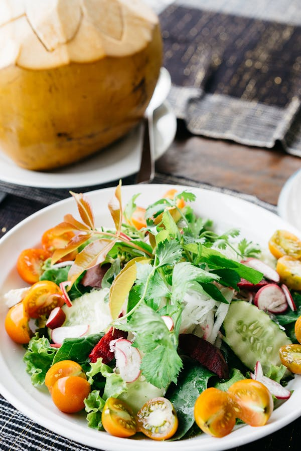

|
 |  |
 |

Spinach Bacon Salad
To prepare Spinach Bacon Salad, start by cooking 6 slices of bacon until crispy. Remove from the pan, let cool, and crumble. In a large bowl, combine 6 cups of fresh spinach leaves, 1/2 cup of thinly sliced red onion, and 1/2 cup of sliced mushrooms. In a small bowl, whisk together 3 tablespoons of olive oil, 2 tablespoons of red wine vinegar, a teaspoon of Dijon mustard, salt, and pepper to taste. Pour the dressing over the salad and toss to coat. Top with the crumbled bacon before serving.

Summer Couscous Salad
For Summer Couscous Salad, cook 1 cup of couscous according to package instructions, then fluff with a fork and let it cool. In a large bowl, combine the cooled couscous, 1 cup of cherry tomatoes halved, 1 cucumber diced, 1/2 red onion finely chopped, 1/4 cup of chopped fresh parsley, and 1/4 cup of crumbled feta cheese. In a small bowl, whisk together 3 tablespoons of olive oil, 2 tablespoons of lemon juice, a teaspoon of honey, salt, and pepper to taste. Pour the dressing over the salad and toss to coat before serving.
break;
Chickpea Salad
To prepare Chickpea Salad, in a large bowl, combine 2 cans of chickpeas (drained and rinsed), 1 cup of cherry tomatoes halved, 1 cucumber diced, 1/2 red onion finely chopped, 1/4 cup of chopped fresh parsley, and 1/4 cup of crumbled feta cheese. In a small bowl, whisk together 3 tablespoons of olive oil, 2 tablespoons of lemon juice, a teaspoon of red wine vinegar, salt, and pepper to taste. Pour the dressing over the salad and toss to coat before serving.
break;Black Bean and Corn Salad
For Black Bean and Corn Salad, in a large bowl, combine 2 cans of black beans (drained and rinsed), 1 can of corn (drained), 1 red bell pepper diced, 1/2 red onion finely chopped, 1/4 cup of chopped fresh cilantro, and 1 avocado diced. In a small bowl, whisk together 3 tablespoons of olive oil, 2 tablespoons of lime juice, a teaspoon of cumin, salt, and pepper to taste. Pour the dressing over the salad and toss to coat before serving.

Spinach Pear Salad with Gouda and Hazelnuts
To prepare Spinach Pear Salad with Gouda and Hazelnuts, in a large bowl, combine 6 cups of fresh spinach leaves, 1 pear thinly sliced, 1/2 cup of shredded Gouda cheese, and 1/4 cup of chopped toasted hazelnuts. In a small bowl, whisk together 3 tablespoons of olive oil, 2 tablespoons of apple cider vinegar, a teaspoon of honey, salt, and pepper to taste. Pour the dressing over the salad and toss to coat before serving.
Chicken Pasta Salad
For Chicken Pasta Salad, cook 2 cups of pasta according to package instructions, then drain and let it cool. In a large bowl, combine the cooled pasta, 2 cups of cooked chicken diced, 1 cup of cherry tomatoes halved, 1/2 cup of sliced black olives, 1/2 cup of diced red bell pepper, 1/4 cup of chopped fresh basil, and 1/4 cup of crumbled feta cheese. In a small bowl, whisk together 3 tablespoons of olive oil, 2 tablespoons of red wine vinegar, a teaspoon of Dijon mustard, salt, and pepper to taste. Pour the dressing over the salad and toss to coat before serving.

Broccoli Salad
To prepare Broccoli Salad, in a large bowl, combine 4 cups of small broccoli florets, 1/2 cup of shredded carrots, 1/4 cup of thinly sliced red onion, 1/4 cup of dried cranberries, and 1/4 cup of sunflower seeds. In a small bowl, whisk together 1/2 cup of mayonnaise, 2 tablespoons of apple cider vinegar, a tablespoon of honey, salt, and pepper to taste. Pour the dressing over the salad and toss to coat before serving.
break;
Crisp Apple Salad
To prepare Crisp Apple Salad, start by washing and thinly slicing 2 large apples. In a large bowl, combine the apple slices, 6 cups of mixed salad greens, 1/2 cup of thinly sliced red onion, 1/2 cup of crumbled blue cheese, and 1/4 cup of chopped walnuts. In a small bowl, whisk together 3 tablespoons of olive oil, 2 tablespoons of apple cider vinegar, 1 tablespoon of honey, and a pinch of salt and pepper. Pour the dressing over the salad and toss to coat before serving.
Mediterranean Salad
For Mediterranean Salad, in a large bowl, combine 2 cups of cherry tomatoes halved, 1 cucumber diced, 1/2 red onion finely chopped, 1/2 cup of Kalamata olives halved, 1/4 cup of crumbled feta cheese, and 1/4 cup of chopped fresh parsley. In a small bowl, whisk together 3 tablespoons of olive oil, 2 tablespoons of red wine vinegar, 1 teaspoon of dried oregano, and a pinch of salt and pepper. Pour the dressing over the salad and toss to coat before serving.
Warm Cucumber Lemon Salad
To prepare Warm Cucumber Lemon Salad, start by slicing 2 large cucumbers. In a pan, heat 2 tablespoons of olive oil over medium heat. Add the cucumber slices and sauté for 3-4 minutes until they are slightly softened but still crisp. Remove from heat and transfer to a large bowl. In a small bowl, whisk together the juice of 1 lemon, 1 tablespoon of honey, 1 tablespoon of chopped fresh dill, salt, and pepper to taste. Pour the dressing over the warm cucumbers and toss to coat before serving.

Indian Style Kachumber Salad
For Indian Style Kachumber Salad, in a large bowl, combine 2 diced tomatoes, 1 diced cucumber, 1 diced red onion, and 1 finely chopped green chili. Add 1/4 cup of chopped fresh coriander leaves. In a small bowl, whisk together the juice of 1 lemon, 1/2 teaspoon of chaat masala, 1/2 teaspoon of roasted cumin powder, salt, and pepper to taste. Pour the dressing over the vegetables and toss to coat before serving.

Crispy Noodle Salad
To prepare Crispy Noodle Salad, cook 2 cups of thin egg noodles according to package instructions until just tender. Drain and rinse under cold water, then spread on a baking sheet to dry. Heat 1/4 cup of oil in a large pan over medium-high heat. Fry the noodles in batches until they are golden and crispy, then remove and drain on paper towels. In a large bowl, combine 2 cups of shredded cabbage, 1 cup of julienned carrots, 1 cup of julienned bell peppers, and 1/2 cup of chopped green onions. In a small bowl, whisk together 3 tablespoons of soy sauce, 2 tablespoons of rice vinegar, 1 tablespoon of sesame oil, 1 tablespoon of honey, and 1 teaspoon of grated ginger. Pour the dressing over the vegetables and toss to coat. Add the crispy noodles just before serving and toss gently to combine.